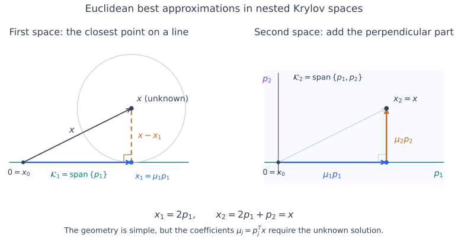
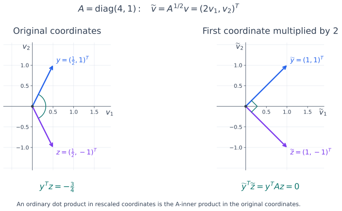
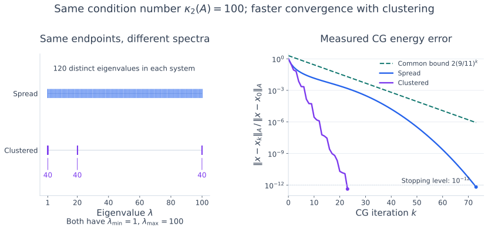

The Conjugate Gradient (CG) Method#
The conjugate gradient method chooses an approximation from a growing Krylov subspace. Its main idea is to change the inner product used to define the best approximation. This makes the coefficients computable without knowing the exact solution. The short recurrence comes afterward, as a way to perform this construction efficiently.
Throughout this section, \(A\in\mathbb R^{n\times n}\) is symmetric positive definite (SPD), and \(x=A^{-1}b\) is the exact solution. As in the chapter introduction, \(x_k\) is the approximation after \(k\) steps. We write \(e_k=x-x_k\) for its error and \(r_k=b-Ax_k=Ae_k\) for its residual. We first take \(x_0=0\), so \(r_0=b\). If \(b=0\), the initial guess is already the solution. All orthogonality and optimality statements below concern exact arithmetic.
Nested Krylov Spaces and Search Directions#
Starting from \(b\ne0\), define
These spaces are nested:
Each multiplication can add at most one new independent direction. While the spaces are growing, \(\dim\mathcal K_k=k\). We seek directions \(p_1,p_2,\ldots\) that follow this growth:
With such a basis, an approximation in \(\mathcal K_k\) has the form
If the optimal coefficients of the old directions remain unchanged when we enlarge the space, only one new term is needed:
This is what an orthogonal basis can provide. We need to choose both the geometry that defines orthogonality and a normalization for each direction.
A First Attempt: Minimize the Euclidean Error#
A natural goal is to find the vector in \(\mathcal K_k\) that minimizes \(\|x-x_k\|_2\). Choose mutually orthogonal directions adapted to the nested spaces. The new direction must satisfy
When \(\dim\mathcal K_k=k\), these conditions specify a unique direction up to a nonzero scalar: the orthogonal complement of \(\mathcal K_{k-1}\) inside \(\mathcal K_k\) is one-dimensional. If we give each direction unit Euclidean norm, these are precisely the Lanczos vectors, up to their signs:
Suppose the final Krylov space containing \(x\) has dimension \(m\le n\). Its orthonormal basis gives the expansion
The Euclidean best approximation in \(\mathcal K_k\) is the partial sum through \(k\). Orthogonality ensures that adding a new direction does not change the previous coefficients. We will justify below why a Krylov space containing \(x\) is reached in at most \(n\) steps, possibly earlier.
The figure illustrates this process in two dimensions. The first approximation is the closest point to \(x\) on the line \(\mathcal K_1\). Adding the perpendicular direction \(p_2\) captures the remaining component without changing the coefficient along \(p_1\).


Fig. 26 Euclidean projection for \(A=\begin{pmatrix}2&-1\\-1&2\end{pmatrix}\) and \(b=(3,0)^T\). Here \(p_1=(1,0)^T\), \(p_2=(0,1)^T\), and \(x=(2,1)^T\). Left: the circle centered at \(x\) touches \(\mathcal K_1\) at the nearest point \(x_1=2p_1\); the error is perpendicular to the line. Right: \(\mathcal K_2\) is the whole plane, so adding \(p_2\) gives \(x_2=2p_1+p_2=x\). These are the best Euclidean approximations of our first attempt. Drawing them uses the exact solution, which is unavailable in the actual solve.#
The difficulty is the coefficient formula: \(p_j^Tx\) involves the unknown solution. Lanczos gives us the directions, but does not directly give these projection coefficients. We need an inner product that lets us use the known equation \(Ax=b\).
The Key Change: Use the A-Inner Product#
Compare the two quantities
The second can be evaluated from known data. This suggests replacing Euclidean orthogonality by orthogonality in the geometry defined by \(A\).
Definition 4 (The A-Inner Product)
For an SPD matrix \(A\), define
Two vectors are A-orthogonal, or conjugate, if \(y^TAz=0\).
The expression \(y^TAz\) is linear in each vector. Symmetry of \(A\) makes it symmetric in \(y\) and \(z\), and positive definiteness gives \(z^TAz>0\) for every nonzero \(z\). Together, these properties make it a valid inner product. A general nonsymmetric or indefinite matrix does not provide this geometry.
This is the energy norm introduced for Gauss-Seidel. To see its geometry, write \(A=V\Lambda V^T\), with \(V\) orthogonal and \(\Lambda\) positive diagonal. Then
Thus the new inner product is an ordinary dot product after rotating into the eigenvector coordinates and scaling by \(\sqrt{\lambda_i}\). The symmetric square root \(A^{1/2}=V\Lambda^{1/2}V^T\) includes a final orthogonal change of coordinates, which preserves dot products. No square root is needed in the algorithm.
We can interpret this scaling as a change of units along the eigenvector directions. In those coordinates, the A-inner product weights the product of the \(i\)th components by \(\lambda_i\). Equivalently, multiply each vector’s \(i\)th component by \(\sqrt{\lambda_i}\), then take the ordinary dot product. The operation is familiar; the coordinate scales have changed.


Fig. 27 The same vectors measured in two coordinate systems. For \(A=\operatorname{diag}(4,1)\), the axes already follow the eigenvector directions. Rescaling the first coordinate by \(\sqrt4=2\) turns squares of the gray grid into rectangles. The transformed vectors have ordinary dot product zero, so the original vectors are A-orthogonal. A change of units preserves the weighted inner product through this transformation, but can change Euclidean angles: A-orthogonality need not look like a right angle in the original coordinates.#
Computable Expansion Coefficients#
From this point on, \(p_j\) denotes an A-orthogonal search direction, replacing the Euclidean directions of the first attempt. We still require the first \(k\) directions to span \(\mathcal K_k\):
As before, the new direction is unique up to scaling: it lies in \(\mathcal K_k\) and is A-orthogonal to \(\mathcal K_{k-1}\). Taking the A-inner product of the full expansion with \(p_i\) gives
Consequently,
The denominator is positive. Both numerator and denominator are computable once \(p_i\) is known. Changing the inner product has removed the unknown solution from the coefficient calculation.
In matrix notation, define \(P_k=[p_1,\ldots,p_k]\) and \(d_j=p_j^TAp_j\). Then
We could normalize every \(p_j\) to have unit A-norm, making \(D_k=I\). Instead, we leave the scale free for now. A later choice will simplify the recurrence.
Why the Partial Sum Is Optimal#
The computable coefficients have a geometric meaning: they give the A-orthogonal projection of \(x\) onto \(\mathcal K_k\).
Theorem 48 (CG Optimality in the Energy Norm)
Let \(p_1,\ldots,p_k\) be an A-orthogonal basis of \(\mathcal K_k\), and set
Then \(x_k\) is the unique minimizer of \(\|x-z\|_A\) over \(z\in\mathcal K_k\). Equivalently,
Proof. For each \(j\le k\), A-orthogonality gives
Any other candidate in \(\mathcal K_k\) is \(x_k+v\), with \(v\in\mathcal K_k\). Expanding its squared error yields
The last term is positive unless \(v=0\), proving the unique minimum.
Enlarging the space adds one A-orthogonal direction, so the old coefficients stay fixed. The update \(x_k=x_{k-1}+\mu_kp_k\) is therefore also a minimization over the whole current space, not just along the latest line.
The same projection identity shows how the error decreases. Since \(x-x_{k-1}=(x-x_k)+\mu_kp_k\) and \(p_k^TA(x-x_k)=0\),
Each nonzero step removes an A-orthogonal component of the error.
As in Gauss-Seidel, define the quadratic energy
Since \(Ax=b\),
Thus CG also minimizes this computable quadratic over \(\mathcal K_k\). It differs from Gauss-Seidel by choosing its directions from the Krylov spaces rather than the coordinate axes.
Use the Residual to Find the Next Direction#
We now have the coefficient formula. The remaining task is to construct the A-orthogonal directions.
One possibility is to start with \(p_1=b\), generate a new vector \(Ap_k\), and subtract its A-projections onto the previous directions. For \(i\le k-2\), symmetry gives
because \(Ap_i\in\mathcal K_{i+1}\subseteq\mathcal K_{k-1}\) and \(p_k\) is A-orthogonal to that space. Thus only the projections onto \(p_{k-1}\) and \(p_k\) remain. This gives a three-term recurrence based on \(Ap_k\).
We will instead use the residual, which gives a computationally more efficient construction: only the latest search direction is needed, and the coefficients simplify to ratios involving residual norms. Recall its definition:
Because \(x_k\in\mathcal K_k\), multiplication by \(A\) gives \(Ax_k\in\mathcal K_{k+1}\). Also \(b\in\mathcal K_{k+1}\), so
The optimality condition tells us more.
Theorem 49 (Orthogonality of Residuals)
The residual of the energy-minimizing approximation satisfies
in the ordinary Euclidean inner product.
Proof. For any \(v\in\mathcal K_k\), the projection property gives
Notice the two different orthogonalities: the error is A-orthogonal to \(\mathcal K_k\), while the residual is Euclidean-orthogonal to it.
If \(r_k\ne0\), it belongs to \(\mathcal K_{k+1}\) but cannot belong to \(\mathcal K_k\), since it is orthogonal to that space. It therefore supplies precisely the new independent direction we need. If \(r_k=0\), then \(Ax_k=b\) and we stop.
Constructing an A-Orthogonal Direction from the Residual#
Suppose \(p_1,\ldots,p_k\) are already known. There is one new A-orthogonal direction in \(\mathcal K_{k+1}\); call it \(p_{k+1}\) for now. We will find it by expanding the nonzero residual in this basis:
For each known direction \(p_i\), taking its A-inner product with this equation isolates one coefficient:
The coefficient of \(p_{k+1}\) is nonzero because \(r_k\notin\mathcal K_k\). We choose the scale of \(p_{k+1}\) so that this coefficient is \(1\). Rearranging then gives the construction
This is A-orthogonalization of the residual. It produces a nonzero vector in \(\mathcal K_{k+1}\) that is A-orthogonal to every previous direction. Starting with \(p_1=r_0=b\), we can therefore construct the entire sequence and calculate every step length.
At this stage the method is fully specified. The next question is how much of this orthogonalization we actually need to perform.
Only the Latest Direction Is Needed#
Most coefficients in the preceding sum vanish. To see why, use symmetry:
For \(i<k\), the nesting of the Krylov spaces gives
Since \(r_k\perp\mathcal K_k\), it follows that \((Ap_i)^Tr_k=0\) for all \(i<k\). Only the coefficient of \(p_k\) remains:
Thus
Although we required A-orthogonality to all previous directions, we need to subtract only the projection onto the latest one. The Krylov structure and symmetry make all the earlier projections zero automatically. Our normalization is now fixed: each direction contains the current residual with coefficient \(1\); its A-norm is generally not \(1\).
The Residual Basis and Its Orthogonality#
The same subspace argument also identifies the residual sequence.
Theorem 50 (Orthogonality of Residuals to Each Other)
Before termination, the nonzero residuals are mutually Euclidean-orthogonal:
Proof. For \(i<j\), we have \(r_i\in\mathcal K_{i+1}\subseteq\mathcal K_j\), while \(r_j\perp\mathcal K_j\). Hence \(r_i^Tr_j=0\).
Theorem 51 (Residuals as a Basis)
If \(r_0,\ldots,r_{k-1}\) are nonzero, then
Proof. Each \(r_i\) belongs to \(\mathcal K_{i+1}\subseteq\mathcal K_k\). These \(k\) residuals are nonzero and mutually orthogonal, so they are linearly independent. They therefore span \(\mathcal K_k\), whose dimension is at most \(k\).
The residuals form a Euclidean-orthogonal basis; the search directions form an A-orthogonal basis. Both describe the same nested Krylov spaces. This distinction explains how the residual can generate a new search direction without itself being A-orthogonal to the previous directions.
Deriving the Efficient Coefficients#
The direction construction is already short. We can also simplify its scalar coefficients so that each iteration needs only one matrix-vector product.
The Step Length#
Recall that \(\mu_k=p_k^Tb/d_k\). Since \(b=r_{k-1}+Ax_{k-1}\) and \(p_k\) is A-orthogonal to \(\mathcal K_{k-1}\),
For \(k>1\), the short direction formula gives \(p_k=r_{k-1}-u_{k-1,k}p_{k-1}\). The residual is orthogonal to \(p_{k-1}\in\mathcal K_{k-1}\), so
For \(k=1\), the same identity follows from \(p_1=r_0\). Therefore,
The residual also updates cheaply. Substituting \(x_k=x_{k-1}+\mu_kp_k\) into its definition gives
The product \(Ap_k\) is already needed for the denominator of \(\mu_k\), so this update needs no additional matrix-vector product.
The Direction Coefficient#
The remaining coefficient is \(u_{k,k+1}=p_k^TAr_k/d_k\). From the residual update,
Recall that \(d_k=p_k^TAp_k\). Multiplying the step-length formula from the preceding subsection by \(d_k\) gives \(\mu_kd_k=\|r_{k-1}\|_2^2\). Using this identity, symmetry, and residual orthogonality, we obtain
Define its negative by
The direction update becomes
The symbols \(\mu_k\) and \(\tau_k\) are often written \(\alpha_k\) and \(\beta_k\) in other descriptions of CG.
The Conjugate Gradient Algorithm#
Start with \(x_0=0\) and \(r_0=b\). If \(r_0=0\), stop. Otherwise, set \(p_1=r_0\). For \(k=1,2,\ldots\), perform
If \(r_k=0\), stop before forming another direction. Otherwise, compute
Positive definiteness ensures \(p_k^TAp_k>0\) for every nonzero search direction. Each iteration uses one matrix-vector product, two inner products when previously computed residual norms are reused, and a few vector updates. Only a fixed number of vectors is stored; the full basis matrices are not formed.
For a general initial guess, start with \(r_0=b-Ax_0\) and use exactly the same recurrence. It searches in \(x_0+\mathcal K_k(A,r_0)\) and minimizes the energy error there. This is equivalent to applying the zero-start derivation to the correction equation \(A(x-x_0)=r_0\).
In floating-point arithmetic, stop when an explicitly checked residual is sufficiently small, using a scaled residual criterion such as the one in the Jacobi implementation. The recursively updated residual can drift from \(b-Ax_k\), so an explicit residual check is useful before accepting the answer. A small residual controls backward error; forward accuracy also depends on conditioning.
Connection to Lanczos and Matrix Relations#
The Euclidean directions from our first attempt reappear as normalized CG residuals. Both \(q_k\) from Lanczos and \(r_{k-1}\) satisfy
Before termination, this new orthogonal direction is one-dimensional. Thus, for signs \(\sigma_k\in\{-1,1\}\) determined by the Lanczos convention,
The residuals, rather than the A-orthogonal search directions, are therefore parallel to the Lanczos vectors.
Orthogonality Relations in Matrix Notation#
Let \(Q_k=[q_1,\ldots,q_k]\), \(P_k=[p_1,\ldots,p_k]\), and \(\mathcal R_k=[r_0,\ldots,r_{k-1}]\). The matrix \(\mathcal R_k\) collects residual vectors. Their properties are
The matrices \(Q_k^TAQ_k=T_k\) and \(\mathcal R_k^TA\mathcal R_k\) are symmetric tridiagonal. The first is the Lanczos projection. The second follows because \(\mathcal R_k=Q_kS_k\) for a nonsingular diagonal matrix \(S_k\) of signed residual norms, so
There is also a direct subspace proof. If \(i\ge j+2\), then \(Ar_j\in\mathcal K_{j+2}\subseteq\mathcal K_i\) and \(r_i\perp\mathcal K_i\), giving \(r_i^TAr_j=0\). Symmetry supplies the zeros on the other side of the diagonal.
The Small Tridiagonal System#
Write the CG approximation in the Lanczos basis as \(x_k=Q_ky_k\). Residual orthogonality then gives
The right-hand side follows from \(q_1=b/\|b\|_2\) and the orthogonality of the remaining columns to \(q_1\). Here \(e_1\) is the first coordinate vector. Since \(A\) is SPD, so is \(T_k=Q_k^TAQ_k\), and this projected system has a unique solution.
CG computes \(x_k=Q_ky_k\) implicitly through its short recurrence, without storing \(Q_k\) or explicitly forming and solving each \(T_k\). This explains both its connection to Lanczos and its small storage requirement.
Why the Name Conjugate Gradient?#
The search directions are conjugate because \(p_i^TAp_j=0\) for \(i\ne j\). This makes the coefficient along each direction final: adding a new conjugate direction does not undo the minimizations already performed.
The gradient comes from the quadratic energy. Its gradient is
Equivalently, the squared-error objective \(L(z)=\tfrac12\|x-z\|_A^2\) differs from \(\Phi(z)\) by a constant and has the same gradient. Thus \(r_k\) is the negative gradient, the direction of steepest decrease in the Euclidean geometry. Steepest descent would use \(r_k\) alone; CG adds a multiple of \(p_k\) to make the new direction conjugate to all previous ones.
Convergence of the CG Method#
The construction explains which approximation CG selects. Its usefulness depends on how quickly the Krylov spaces contain accurate approximations.
Finite Convergence in Exact Arithmetic#
Theorem 52 (Finite Convergence of CG)
For an SPD \(n\times n\) matrix, CG finds the exact solution in at most \(n\) iterations in exact arithmetic. It may terminate earlier.
Proof. If \(r_0,\ldots,r_{n-1}\) are all nonzero, they are \(n\) mutually orthogonal vectors and hence form a basis of \(\mathbb R^n\). By Theorem 51, \(\mathcal K_n=\mathbb R^n\). The next residual \(r_n\) is orthogonal to this whole space, so it must be zero. If any earlier residual vanishes, the solution has already been found.
The Krylov space can stop growing before it fills \(\mathbb R^n\). If \(\mathcal K_{m+1}=\mathcal K_m\), then \(r_m\in\mathcal K_{m+1}=\mathcal K_m\) and \(r_m\perp\mathcal K_m\), forcing \(r_m=0\). Thus termination occurs when growth stops, and the full solution has an expansion in the directions already constructed. We never need to assume that \(\mathcal K_n\) has dimension \(n\) for every right-hand side.
For a large sparse problem, the practical goal is an accurate approximation in far fewer than \(n\) steps. Finite termination is a theoretical property, not a reason to classify CG as a direct solver. In floating-point arithmetic, conjugacy and residual orthogonality can be lost, so the \(n\)-step guarantee does not generally hold.
The Error Polynomial and the Condition Number#
The Chebyshev analysis described error reduction through polynomials of \(A\). The same viewpoint applies to CG. Since \(x_k\in\mathcal K_k(A,b)\) and \(b=Ax\), its error can be written
Conversely, every polynomial satisfying these conditions gives a candidate in \(\mathcal K_k\): because \(p(0)=1\), we can write \(p(\lambda)=1-\lambda s(\lambda)\) with \(\deg s\le k-1\). Then \(x-p(A)x=s(A)b\in\mathcal K_k\). Thus minimizing over these polynomials is exactly the same as minimizing over the Krylov space. CG chooses the candidate with the smallest energy error.
To bound this error, write \(x=\sum_j c_jv_j\) in an orthonormal eigenvector basis of \(A\). Then
Let \(\lambda_{\min}\) and \(\lambda_{\max}\) be the smallest and largest eigenvalues. Bounding all values on this enclosing interval gives
The same bound holds for a general \(x_0\) by applying the argument to the correction equation. In particular, CG has no larger energy error than the Chebyshev approximation of the same degree and initial guess.
For SPD \(A\), define the 2-norm condition number and the associated convergence factor by
Applying the Chebyshev bound from Theorem 47 gives, for \(k\ge1\),
If \(\kappa_2(A)=1\), then \(A\) is a positive multiple of the identity and CG solves the system in one step. When the condition number is close to one, the factor \(\rho\) is small and the bound predicts rapid convergence. For large \(\kappa_2(A)\), the factor approaches one and the guarantee weakens. The factor bounds the overall error decay; it is not an assertion that the actual error decreases by exactly \(\rho\) at every step.
Eigenvalue Clustering#
The condition-number bound uses only the extreme eigenvalues. The actual rate depends on the whole eigenvalue distribution and on the initial error.
If \(A\) has \(s\) distinct eigenvalues \(\theta_1,\ldots,\theta_s\), consider
It equals \(1\) at zero and vanishes at every eigenvalue, so \(p(A)=0\). This candidate has zero error, and CG optimality proves exact convergence in at most \(s\) steps. Only eigenvalues present in the initial error are needed in this argument, so convergence can occur even sooner.
Tight eigenvalue clusters can also help: a polynomial can be small on the clusters without being small throughout the entire interval between the extreme eigenvalues. This can make convergence much faster than the condition-number bound predicts. The widths and separation of the clusters matter; \(s\) clusters do not generally imply termination in \(s\) steps.
The following experiment compares two \(120\times120\) SPD systems with the same condition number, \(\kappa_2(A)=100\). One has evenly spread eigenvalues; the other has three tight clusters. Both start from zero with the same initial-error coefficients in their eigenvector bases. The plotted errors come from actual CG iterations, using the known solution to measure the energy error.


Fig. 28 Same condition number, different convergence. The matrices are diagonal, so their coordinate axes are eigenvector directions. The spread spectrum is evenly spaced in \([1,100]\); the clustered spectrum has 40 eigenvalues in each of \([1,1.1]\), \([19.95,20.05]\), and \([99.9,100]\). In both cases, \(x=(1,\ldots,1)^T/\sqrt{120}\), \(b=Ax\), and \(x_0=0\). The right panel shows the computed relative energy error and their common bound \(2(9/11)^k\). Each run stops once the measured error is below \(10^{-12}\). Clustering gives faster convergence here, even though all 120 eigenvalues remain distinct.#
This motivates preconditioning: transform the system into an equivalent problem for which an inexpensive iterative solve converges faster. For CG, the transformation must retain the SPD structure. We develop this in preconditioned CG.
Superlinear Acceleration#
CG sometimes converges faster as the iterations proceed. In this setting, superlinear convergence refers to an improving effective error-reduction factor, rather than one fixed geometric rate throughout the calculation. Such acceleration is possible, but not guaranteed for every problem or at every step.
The Lanczos connection helps explain it. Recall that the Ritz values are the eigenvalues of the small matrix \(T_k=Q_k^TAQ_k\). As they approximate some eigenvalues of \(A\), particularly well-separated extreme eigenvalues, the CG error polynomial can strongly suppress the associated error components. The remaining components may occupy a much narrower spectral interval. CG can then behave as though it were solving a problem with a smaller effective condition number. The improvement is gradual; it does not require those components to become exactly zero.
Key Results to Remember#
Assume \(A\) is SPD and work in exact arithmetic. As in the derivation, take \(x_0=0\), write \(x=A^{-1}b\), and define
The geometry is defined by \(\langle u,v\rangle_A=u^TAv\) and \(\|v\|_A=\sqrt{v^TAv}\).
The formulas below use \(x_0=0\). The basis statements apply while the listed residuals and search directions are nonzero. For a general initial guess, apply them to the correction equation \(A(x-x_0)=r_0\): replace \(b\) by \(r_0\) and the approximations \(x_k\) by \(x_k-x_0\). The errors and residuals are unchanged.
One Krylov Space, Several Bases#
The search directions, residuals, and Lanczos vectors span the same nested spaces:
The approximation and the next residual satisfy
The Orthogonality Relations#
The search directions are A-orthogonal, while the residuals are Euclidean-orthogonal:
The error and residual are orthogonal to the current search space in different inner products:
These two statements are equivalent because \(r_k=Ae_k\). In particular, \(p_i^Tr_k=0\) for \(i\le k\). A nonzero \(r_k\) is therefore a new direction outside \(\mathcal K_k\), even though it is generally not A-orthogonal to all the previous search directions.
Optimality over the Whole Search Space#
CG produces the unique best approximation in the energy norm:
Equivalently, it minimizes the computable quadratic energy:
The projection identity makes the optimality explicit. For every \(z\in\mathcal K_k\),
Thus the energy error decreases as the search space grows. The Euclidean residual norm, however, need not decrease at every step.
There is also an equivalent residual interpretation. Since
CG minimizes the residual in the \(A^{-1}\)-norm over the search space. It does not generally minimize the residual in the Euclidean norm.
Computable Coefficients and Short Updates#
With the normalization \(p_1=r_0\) and \(p_{k+1}=r_k+\tau_kp_k\), the coefficients are
The iterates, residuals, and directions update by
The step along \(p_k\) minimizes the energy along that line. Conjugacy ensures that this step also gives the minimum over the entire enlarged space without changing the old expansion coefficients. Stop if \(r_k=0\), before generating another direction. Each iteration uses one matrix-vector product and stores only a fixed number of vectors.
The Lanczos Connection#
The normalized residuals are the Lanczos vectors up to signs:
For \(Q_k=[q_1,\ldots,q_k]\), \(P_k=[p_1,\ldots,p_k]\), and \(\mathcal R_k=[r_0,\ldots,r_{k-1}]\),
With \(q_1=b/\|b\|_2\), the same approximation can be written
CG solves this projected problem implicitly through the short updates.
Convergence and Its Limits#
CG finds the exact solution in at most \(n\) steps, or at most \(s\) steps if \(A\) has \(s\) distinct eigenvalues. Earlier termination is possible when fewer eigenvalues are present in the initial error.
Its optimality can also be expressed through error polynomials:
With \(\kappa_2(A)=\lambda_{\max}(A)/\lambda_{\min}(A)\), the condition-number bound for \(k\ge1\) is
Eigenvalue clustering can give faster convergence than this bound predicts, and convergence can accelerate as some error components are suppressed. These improvements depend on the problem; they are not guaranteed at every step.
In floating-point arithmetic, the orthogonality relations and finite-termination guarantee need not hold exactly. Check the explicitly computed residual before accepting a solution, and use preconditioning when the unpreconditioned iteration converges too slowly.